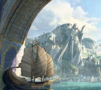

Arda es el nombre que recibe el mundo en que transcurren los acontecimientos de casi todas las obras de Tolkien. Se encuentra en Eä, el universo creado por la Música de los Ainur, y durante su historia ha ido cambiando de forma, tanto de continentes como de forma planetaria. Dentro de Arda hay muchas regiones, siendo la más conocida de ellas la Tierra Media o Endor
Significa el "lugar donde habita el Hombre". Estas tierras luego serán habitadas no solo por el hombre, si no tambien por otras especies.
Es conocido por ser las tierras donde habitan los Valar, y por ser la morada principal de los Elfos. Su acceso sólo está permitido a los Elfos, y ningún mortal puede llegar a Aman a no ser que un Elfo les regale su don,
Una gran isla situada en mitad del océano Belegaer, entre la Tierra Media en el este y Valinor en el oeste.
